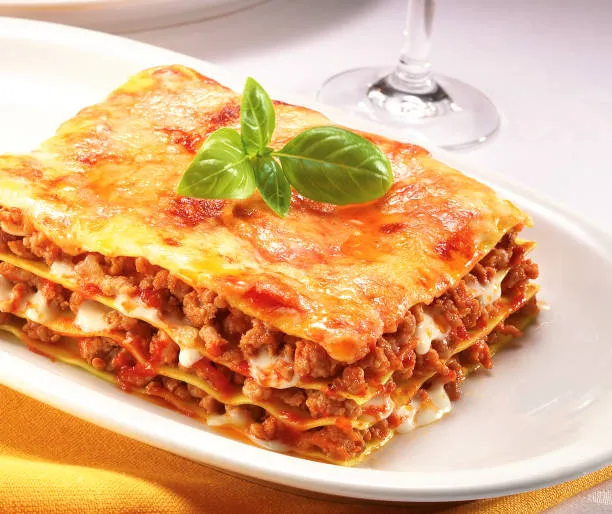

Lasagna

Description
Layers of perfectly cooked pasta, rich and savory marinara sauce, and a generous blend of creamy ricotta, mozzarella, and parmesan cheeses come together in our Signature Lasagna.
Each bite is a melt-in-your-mouth experience, with tender, seasoned ground beef (or your choice of protein) layered in between, creating the ideal balance of flavors.
Slow-baked to golden perfection, this lasagna is finished with a sprinkle of fresh basil and a dusting of parmesan, making it a dish that’s as beautiful as it is delicious.
Ingredients
- 12 lasagna noodles
- 1 lb ground beef (or ground turkey for a lighter option)
- 1 onion, chopped
- 2 cloves garlic, minced
- 1 jar (24 oz) marinara sauce
- 2 cups ricotta cheese
- 2 cups shredded mozzarella cheese
- 1 cup grated parmesan cheese
- 1 egg
- 1 tbsp dried oregano
- 1 tbsp dried basil
- Salt and pepper to taste
- Fresh basil (optional, for garnish)
Steps
- Cook the Noodles: Boil the lasagna noodles according to package instructions. Drain and set aside.
- Prepare the Meat Sauce: In a large pan, brown the ground beef over medium heat. Add the chopped onion and garlic, cooking until soft. Stir in the marinara sauce, oregano, basil, salt, and pepper. Simmer for 10-15 minutes to allow the flavors to meld.
- Prepare the Cheese Mixture: In a medium bowl, combine the ricotta cheese, 1 cup of mozzarella, ½ cup of parmesan, and the egg. Stir until smooth. Season with a pinch of salt and pepper.
- Assemble the Lasagna: Preheat your oven to 375°F (190°C). Spread a thin layer of the meat sauce in the bottom of a 9x13-inch baking dish. Place a layer of lasagna noodles on top. Add a layer of the ricotta cheese mixture, followed by more meat sauce, and sprinkle with mozzarella. Repeat the layers until all ingredients are used, finishing with a layer of sauce and a generous topping of mozzarella and parmesan.
- Bake the Lasagna: Cover the baking dish with aluminum foil and bake for 25 minutes. Remove the foil and bake for an additional 15-20 minutes, until the top is golden and bubbly.
- Serve: Let the lasagna rest for 10 minutes before slicing. Garnish with fresh basil if desired.